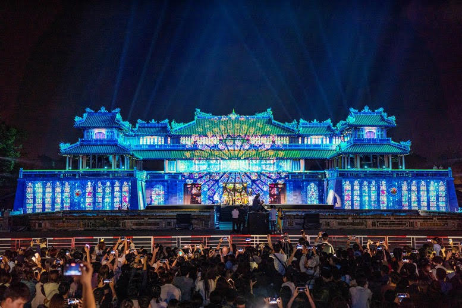

王宮ナイトツアー
夜の王宮はライトアップされ、昼とはまったく違う幻想的な雰囲気に包まれます。歴史と光が交わる空間で、まるでタイムスリップしたような気分を味わえます。
夜の王宮はライトアップされ、昼とはまったく違う幻想的な雰囲気に包まれます。歴史と光が交わる空間で、まるでタイムスリップしたような気分を味わえます。

香江を船でゆっくり進み、伝統音楽「ニャーニャック・クンディン」を聴きながら過ごすひとときは、まさにフエの旅のハイライト。夜風と音楽に包まれる時間は忘れられません。
フエの伝統料理を現地のシェフから学ぶことができます。市場で食材を選び、王宮風の盛り付けまで体験できる貴重なプログラムです。
古都の街並みは自転車で巡るのが一番。王宮周辺や川沿いの小道を走りながら、町の息遣いを感じられます。
フエの寺院では、僧侶と一緒に瞑想体験ができる場所もあります。静けさの中で自分と向き合う時間は、旅をより深いものにしてくれます。